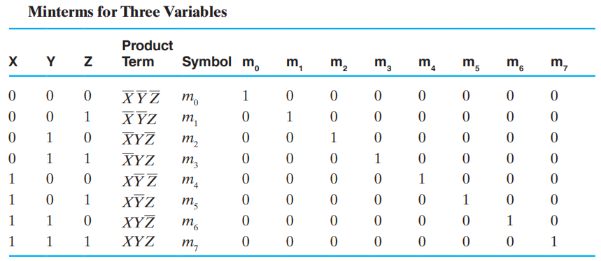
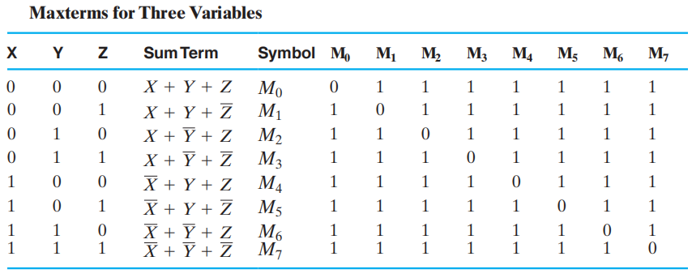

Chap 2: Combinational Logic Circuit⚓︎
约 4767 个字 预计阅读时间 24 分钟
核心知识
- 逻辑门：与、或、非、与非、或非、异或、三态门等
- 布尔函数和布尔方程，关于它们的一些恒等式，比如分配律、德摩根定理等
- 标准形式
- SOM 和 POM
- SOP 和 POS
- 门成本计算
- 卡诺图
- 蕴含项、主蕴含项、质主蕴含项
- Don't Care
Gate Circuit and Boolean Equations⚓︎
Binary Logic and Gates⚓︎
-
二进制变量 (binary variables) 取
0和1中任意一个值，可以用单个字符表示，也可以用有意义的单词表示 -
逻辑运算符 (logical operators) 在二进制值和二进制变量上运算。基本的逻辑运算符包括逻辑与 (AND)，或 (OR) 和非 (NOT)
- AND：记作 (\(\cdot\)) 或 (\(\times\))
- OR：记作 (\(+\))
- NOT(inverter)，记作 (\(\overline{X}\))( 上面的短横 )，(\('\))( 用在后面 ) 或 (\(\sim\))( 用在前面 )
-
真值表 (truth tables)：一张列出函数所有可能的参数组合的值的表格
Logic Gates⚓︎
逻辑门 (logic gates)：执行逻辑函数
背景
- 在早期的计算机中，开关的开闭通过由中继器 (relay) 通电的线圈产生的磁场实现。这些开关轮流开闭电路。
- 之后，真空管 (vacuum tubes) 通过电子方式的开闭，取代了中继器
- 现在，晶体管 (transistors) 用来作为电子开关。逻辑门通过双极晶体管 (bi-polar junction transistors, BJT) 实现
逻辑门的类型：
Basic Logic Gates⚓︎
基本逻辑门的符号表示：
时序图 (timing diagram) 表示：
逻辑门可以有不止两个的输入脚：

Universal Logic Gates⚓︎

一种能够实现所有可能的布尔函数的门类型被称为通用门 (universal gate)，这种门是功能完全的 (functionally complete)。上面的与非门 (NAND) 和或非门 (NOR) 便是通用门。
 ：
：
Other Logic Gates⚓︎
注：具体内容戳这
逻辑图和表达式的类型：
- 真值表
- 布尔方程
- 逻辑图
- 波形图
注：
- 这 4 种方法可以用相同的布尔函数表示
- 真值表和波形图是唯一的，而布尔方程和逻辑图并不是唯一的，这为实现函数提供一定的灵活性
Boolean Algebra⚓︎
代数结构 (algebraic structure)由两个元素的集合 \(B = \{0, 1\}\)，以及三种运算符 ( 与、或、非 ) 构成。它满足下列基本恒等式
🌟
重点记住蓝字那两行，它们很有用但不好记
相等——对于 \(F_1 = f_1(X_1, X_2, \dots, X_n)\) 和 \(F_2 = f_2(X_1, X_2, \dots, X_n)\)，如果任何输入值能产生相同的输出 \(F_1\) 和 \(F_2\)，那么我们可以说布尔函数 \(F_1 = F_2\)
Precedence⚓︎
- 括号
- NOT
- AND
- OR
Duality Rules⚓︎
布尔代数表达式的对偶 (dual) 可以通过以下步骤得到：
- AND \(\Leftrightarrow\) OR( 互换 )
- \(0 \Leftrightarrow 1\)( 互换 )
- 变量保持不变
除非出现自对偶 (self-dual)，一个表达式的对偶 \(\ne\) 它自身
🌰：\(F = (A + \overline{C}) \cdot B + 0\) 的对偶为 \((A \cdot \overline{C} + B) \cdot 1\)
性质：
- 如果 \(G\) 是 \(F\) 的对偶，反之亦然，即 \(F' = G, G' = F\)
- 如果两个函数相等，即 \(F = G\)，则它们的对偶函数也相等，即 \(F' = G'\)
Complementing Functions⚓︎
对于逻辑函数 \(F\)，通过以下步骤得到它的反函数 (inverse function)\(\overline{F}\)：
- AND \(\Leftrightarrow\) OR( 互换 )
- 对每一个常变量和字面量取补
我们通常使用德摩根定理 (DeMorgan's Theorem)来实现上述步骤
Substitution Rules⚓︎
对于布尔方程中的某个变量 \(A\)，如果用别的逻辑函数 \(F\) 来代替所有的 \(A\)，则该布尔方程依然成立
Useful Theorems⚓︎
- 最小化：\(x \cdot y + \overline{x} \cdot y = y \quad (x + y)(\overline{x} + y) = y\)
- 吸收：\(x + x \cdot y = x \quad x \cdot (x + y) = x\)
- 简化：\(x + \overline{x} \cdot y = x + y \quad x \cdot (\overline{x} + y) = x \cdot y\)
- 一致性 (consensus) 定理：
常见题型
- 证明恒等式
- 简化布尔方程：使得字面量 ( 包括所有未取补和取补的 ) 的数量最小
Standard Forms⚓︎
运算布尔函数时遇到的问题
- 证明布尔函数：布尔函数不是唯一的
- 表达式的简化：可能要用到的恒等式或定理太多了，需要掌握一些技巧
解决方案：
流程图中的中间步骤用到了范式 (canonical form)，它具有以下优点：
- 与真值表直接对应
- 容易比较布尔函数的等价关系
-
为函数的优化提供良好开端 两种常见类型：
-
最小项之和 (sum of minterms, SOM)
- 最大项之积 (product of maxterms, POM)
Minterms and Maxterms⚓︎
-
最小项 (minterms) 是所有变量 ( 不论是本身 \(X\) 还是取补 \(\overline{X}\)) 的乘积项
- 如果有 n 个变量，则有 \(2^n\) 个最小项
- 对于每个最小项，只有一种输入使得它的值为 1，其余输入对应的输出均为 0
- 一般用 \(m_i\) 表示最小项，其中 \(i\) 指的是第 \(i\) 种输入组合

-
最大项 (maxterms) 是所有变量 ( 不论是本身 \(X\) 还是取补 \(\overline{X}\)) 的和项
- 如果有 n 个变量，则有 \(2^n\) 个最大项
- 对于每个最大项，只有一种输入使得它的值为 0，其余输入对应的输出均为 1
- 一般用 \(M_i\) 表示最大项，其中 \(i\) 指的是第 \(i\) 种输入组合

注
- 最小项和最大项的下标 (subscript) 表示一种二进制的排序方式，它能够反映在标准顺序 (standard order)( 通常是按字母表顺序 ) 下的某种输入组合
-
最小项和最大项的索引 (index) 用二进制数 0 和 1 表示，它能够反映每个变量在最小 / 大项中是以正常形式 \(X\) 还是以补形式 \(\overline{X}\) 存在
- 最小项
： ‘1’表示不取补， ‘0’表示取补 - 最大项
： ‘0’表示不取补， ‘1’表示取补
- 最小项
🌰：当索引 = 6 时，\(m_6 = XY\overline{Z},\ M_6 = (\overline{X} + \overline{Y} + Z)\)
最大项与最小项之间的关系：\(M_i\) 和 \(m_i\) 互为对方的补，即 \(M_i = \overline{m_i}\) 且 \(m_i = \overline{M_i}\)
SOM and POM⚓︎
根据最小项和最大项的第 2 条特点，我们可以得到：
- 任何函数都可以用 值为 1 的最小项的或 ( 和 ) 来表示，这种函数被称为最小项函数 (minterm function)
- 任何函数都可以用 值为 0 的最大项的与 ( 积 ) 来表示，这种函数被称为最大项函数 (maxterm function)
因此，我们可以分别得到两种范式：最小项之和 (SOM)与最大项之积 (POM)
一般函数 \(\Rightarrow\) SOM：将原来函数中所有的项扩展至包含全部变量的项，即：对于某个项，只要它缺少某个变量 \(v\)，就将 \((v + \overline{v})\) 和该项进行与运算。
🌰：
一般函数 \(\Rightarrow\) POM：将原来函数中所有的项扩展至包含全部变量的项
- 先使用第二条分配律：\(X + YZ = (X + Y)(X + Z)\)
- 对于该项，只要它缺少某个变量 \(v\)，就将 \(v \cdot \overline{v}\) 和该项进行或运算
- 然后再用分配律化简
🌰：
SOM 或 POM 可以通过两级逻辑 (two-level logic)来实现。对于 \(n\) 个变量的 SOM，第 1 级采用 \(n\) 输入与门，第 2 级采用一个或门
注：我们一般使用 SOM，POM 很少使用
Conversion⚓︎
如何得到 (SOM 形式的 ) 函数 \(F\) 的补 \(\overline{F}\)：
- 挑选最小项为 0 的项 ( 即 \(F\) 中未出现的最小项 )，取它们的 SOM
- 或者挑选最小项为 1 的项 ( 即 \(F\) 中出现过的最小项 )，取它们的 POM
🌰：\(F = \sum m(1, 3, 5, 7), \quad \overline{F} = \sum m(0, 2, 4, 6) = \prod M(1, 3, 5, 7)\)
SOM \(\Leftrightarrow\) POM：取两次补函数。以 SOM 形式的函数为例，第一次取补改变最小项的下标 ( 取补方法 1)，第二次取补改变为 POM 的形式 ( 取补方法 2)，因此 $$ F(x_1,\dots,x_n) = \sum\limits_{0 \le i \le 2^n - 1} m_i = \prod_{0 \le j \ne i\le 2^n - 1} M_j $$
Standard Forms⚓︎
范式虽然基本且容易得到，但它不常用，因为每个最小项和最大项都需要包含所有 \(n\) 个变量，这在实际运用中不太现实，因此我们采用另一种方法——标准形式 (standard form)，它的每一项可以包含一个或多个变量。它具有以下形式：
- 标准积之和 (standard sum-of-products, SOP)：与项的或 ( 和 )
- 标准和之积 (standard product-of-sums, POS)：或项的与 ( 积 )
辨别
- SOP：\(ABC +\overline{AB}C + B\)
- POS：\((A + B) \cdot (A + \overline{B} + \overline{C}) \cdot C\)
- 两者都不是：\((AB + C)(A + C),\ AB\overline{C} + AC(A + B)\)
根据SOM & POM这一小节的第一个例子，将化简过程倒过来便是函数 (SOM) 转化为 SOP 的形式的步骤 ( 利用上面给出的公式，用提取公因式、合并等方法化简 )。观察发现，我们大幅简化了布尔函数，而且实现上也变得更加简单：
Circuit Optimization⚓︎
 ：得到对于某个给定函数的最简实现
：得到对于某个给定函数的最简实现
Big Picture of Boolean Function Optimization

Tow-Level Optimization⚓︎
Cost Criteria⚓︎
从布尔方程的角度看：
- 字面量成本 (literal costs)：所有字面量出现的次数 ( 相同的字面量出现 \(n\) 次，计算时加上重数 \(n\))
注：字面量 (literal) 指单个变量( 不论有没有取反 )
-
门输入成本 (gate input costs)，包括：
- 直接来自于字面量输入的那些引脚
- 字面量做运算后得到的结果作为输入传入下一级逻辑门的引脚
分类：
- G：不计算非门
- GN：计算非门
注：由于门输入成本与所用晶体管和导线数量成正比，因此它是一种很好的测量方式
从门电路实现的角度看：
- 字面量 L：计算所有与门的输入和或门中单变量输入的个数
- G：加上剩余的或门输入
- GN：加上非门的输入
特殊情况：
- 三态门：有两个输入脚
- 传输门：看似有多个脚，实则只计算一个脚
例题

Map Manipulation⚓︎
卡诺图 (Karnaugh maps, K-map) 由一组方块构成：
- 每个方块代表最小 / 大项
- 布尔函数的结果从真值表转移到一张二维的 K-map 上
- 相邻的方块仅相差一个变量（方块按照格雷码的顺序排列）
- 通过识别方块的图案，将布尔函数转化为另一种形式的等价函数
优点：简单不易错，不用记那些繁琐的定理来化简，相较于代数方法化简所需步骤更少
缺点：仅限于少量变量 (2-5 个 )，结果不唯一
应用：
- 找到最优或近似最优解
- 将简化布尔表达式的过程可视化
- 在计算机辅助设计 (CAD) 用于化简大型电路
 使用 K-map 简化的步骤：
使用 K-map 简化的步骤：
- 找到最小或最大项
- 用最小 / 大项填充 K-map，其中最小项填 1，最大项填 0
- 用矩形圈出包括 2 的次幂个全都是 1(SOP) 的方块（相当于 SOP 中的积项
） ，且确保矩形尽可能的大，矩形之间可以重叠POS 则找全都是 0 的方块 ( 和项 )
-
从这些圈中得到简化的表达式。
- SOP：找到乘积项并将它们相加
- POS：找到和项并将它们相乘
Example
观察到 K-map 的方块通过格雷码编址

- 一个方块代表三个变量的最小项
- 两个相邻方块代表两个变量构成的积项
- 四个相邻方块代表一个变量
- 八个方块 = 1
有些方块看似不相邻，但如果采用“按对相邻环 (pairwise adjacent ring)”的概念，将 K-map“卷”起来，形成一个圆柱，那么两边的方块就会形成相邻的关系。这样的相邻也可以用来化简。

🌰：
- 1 个方块 = 4 变量积项 ( 最小项 )
- 2 个方块 = 3 变量积项
- 4 个方块 = 2 变量积项
- 8 个方块 = 1 变量积项
- 16 个方块 = 1
四变量 K-map 的两侧和上下也认为是“相邻”的，因此可以将 K-map 弯曲成一个甜甜圈状的物体：
Don't-Care⚓︎
有时某个函数出现这样的情况：
- 最小项对应的输入从未出现过
- 最小项对应的输出从未用过
这样的输出值我们并不关心，因此用 \(\times\) 代表don't-Cares，既可以把它看作1，也可以把它看作0。在 SOP 化简中，我们可以把 \(\times\) 看作1，这样可以形成更大面积的主蕴含项，有助于化简，降低逻辑电路成本。
所有 don't care 项可以用 \(\sum d(j_1, \dots, j_m)\) 表示，其中 \(j_k(k = 1, \dots, m)\) 表示索引
一些例子
我们只用到 0-9 十个数字，1010-1111 不会被用到，因此这 6 个数在 K-map 上对应的输出我们用 \(\times\) 表示

Systematic Simplication⚓︎
- 蕴含项 (implicant)：SOP 的积项或 POS 的和项，包含 \(2^k(k \in [0, n])\) 个相邻方块
- 主蕴含项 (prime implicant)：结合尽可能多的 \(2^k(k \in [0, n])\) 个相邻方块的积项
- 质主蕴含项 (essential prime implicant)：至少包含 1 个没有被其他主蕴含项包括在内的最小项的主蕴含项
注：对于周期布尔函数 (cyclic Boolean function)，它的 K-map 是没有质主蕴含项的

解题技巧
- 以 \(n\) 变量卡诺图为例，先找包含 \(2^{n - 1}\) 项的主蕴含项，再找包含 \(2^{n - 2}\) 项的主蕴含项，以此类推
- 先（用不同颜色的笔）框出所有的主蕴含项，然后再找变量化简为布尔函数
例题

Multiple-Level Circuit Optimization⚓︎
多级电路相较于两级电路 (SOP 和 POS)，它减少了输入的成本
：
Additional Gates and Circuit⚓︎
Other Gate Types⚓︎
🌟简单门电路表

注：
- 比较与门和三态门 (3-State Buffer)：与门的输出 F 不能与其他门的输出相连，而三态缓冲器可以
- Hi-Z意思是高阻抗的状态，此时既非高电平，亦非低电平
- 缓冲器 (Buffer)看起来只起到连接作用，实际上它起到提升电压，增加电路运算的速度的作用
NAND and NOR Gates⚓︎
与非门 (NAND Gate)：
或非门 (NOR Gate)：

与非门、或非门都是一种通用门 (Universal gate)，即可以用来执行任何布尔函数的门。通过 CMOS 技术很自然地实现与非门的功能。
复杂门电路表

Buffer⚓︎
缓冲器 (buffer) 是一个电子放大器，用来提高电压、提升电路运行的速度，它的函数为 \(F = X\)

3-State Buffer⚓︎
三态门 (3-state buffer) 提供了第三个逻辑值：高阻抗 (Hi-impedance) 输出Hi-Z，即输入和输出之间处于断路状态，因此高阻抗状态的门输出可以连在一起。

符号及真值表：
- IN：数据输入
- EN：使能控制输入
-
OUT：数据输出
-
EN = 0 \(\rightarrow\) OUT = Hi-Z
- EN = 1 \(\rightarrow\) OUT = IN
三个三态门连在一起：
警告
- 除了三态门外，多个门的输出不能用线连在一起 !!!
- 同一时间最多只有一个三态门处于使能状态，否则电路就会被烧坏掉
🌰：数据选择电路
- S = 0 \(\rightarrow\) OUT = IN0
- S = 1 \(\rightarrow\) OUT = IN1
注：不难发现，当一个三态门处于使能状态时，另一个一定处于高阻抗状态，所以不用担心烧坏的情况发生 ( 实际上这是一个 2-1 MUX，Chap 3 会讲到 )
Exclusive-OR Operator and Gates⚓︎
XOR( 异或门 ) \(X \oplus Y = X \overline{Y} + \overline{X}Y\)
XNOR( 同或门 ) \(\overline{X \oplus Y} = XY + \overline{XY}\)
注：XNOR 函数即为等价函数，记作 \(\equiv\)
XOR 的电路实现

只用与非门构建的异或门电路

应用：加 / 减 / 乘法器、计数器、递增器、递减器、奇偶生成器 / 校验器等
注：严格来说，XOR 和 XNOR 门不能具有两个以上的输入，如果存在这种情况，则它们被称为奇函数和偶函数。
一些关于异或的恒等式
Odd and Even Functions⚓︎
三个变量以上的异或函数被称为奇函数 (odd function)：
奇函数的补为偶函数 (even function)
奇函数和偶函数在 K-map 上的布局呈棋盘布局

不难看出：
- 奇函数的 1 出现在对应拥有奇数个 1 的索引的最小项上
- 偶函数的 1 出现在对应拥有偶数个 1 的索引的最小项上
对于多个变量的异或，我们采用树状结构 (tree)，将几个异或门连在一起。之所以可以这样做，是因为异或满足结合律
Parity Generators and Checkers⚓︎
知识回顾：奇偶校验位

大致原理：
- 偶校验码：使用奇函数生成，偶函数校验
- 奇校验码：使用偶函数生成，奇函数校验
3 位码偶校验生成器 + 检查器
Gate Propagation Delay⚓︎
Gate Delay⚓︎
在实际的物理门中，当提供输入时，输出不会立马随之发生改变，这说明输入的变化和输出的变化之间存在延迟，这被称为门延迟 (gate delay)，具体内容见 Chap 3
Appendix⚓︎
Shannon Formula⚓︎
Shannon Expansion: $$ \text{These formulas are derived from four formulas above} $$ $$ f(x, \bar{x}, y, \dots, z) = xf(1, 0, y, \dots, z) +\bar{x}f(0, 1, y, \dots, z) $$ $$ f(x, \bar{x}, y, \dots, z) = [x +f(0, 1, y, \dots, z)]\cdot [\bar{x} + f(1, 0, y, \dots, z)] $$
Transmission Gate⚓︎
传输门 (transmission)的内部结构：
其实在三态门的应用中我们提到过这个例子，其实就是一个传输门的构建
符号及真值表：
评论区